Appendix
D
A Visual Tour of the Open Design UI
Screenshots from a local Open Design build, June 2026
The key workflow screenshots in this appendix were refreshed from a local Open Design v0.11.0 build running on macOS in June 2026. A few lower-level historical panels remain from the earlier v0.9.0 capture set where the surrounding workflow did not materially change. Treat all UI screenshots as a point-in-time guide, not a permanent reference.
Open Design changes quickly. These screenshots were refreshed against v0.11.0 on June 19, 2026, with earlier v0.9.0 screenshots retained only for narrow panels that were not recaptured. Screen layouts, button labels, and workflow order are subject to change in subsequent releases. When in doubt, check the live repository at github.com/nexu-io/open-design.
D.1 Choosing how generations run
Open Design doesn't assume you have a cloud subscription or a preference for any particular AI provider. The first screen after installation presents one explicit question: how do you want to run inference? Most tools bury this choice in settings, where it surfaces later as a surprise bill or an unexpected latency spike. Open Design makes you answer it before you reach the canvas.
Three paths are available: the Open Design AMR hosted relay, which runs Claude Opus 4.8 with no deploy step and routes intelligently across model tiers; a local coding agent, which delegates to whichever CLI you already have installed on your machine; and Bring-Your-Own-Key (BYOK), where you supply an API key directly to Anthropic, OpenAI, Azure OpenAI, or Google. Each path has a different cost profile, privacy boundary, and setup cost --- and that's exactly the trade-off the screen is asking you to make consciously.
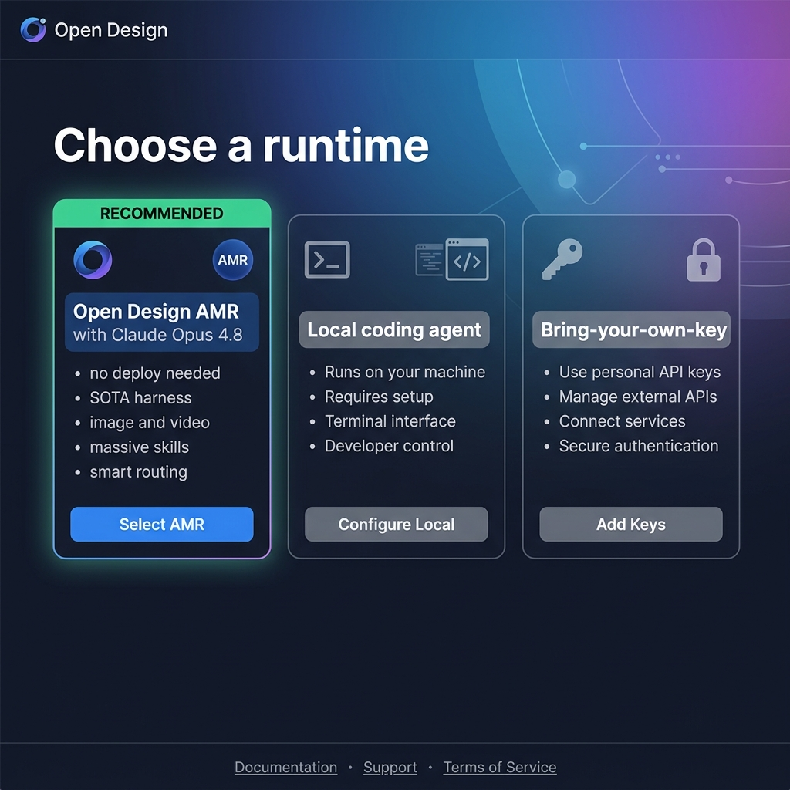
Choosing Local coding agent advances to a detection grid. Open Design scans your PATH at launch and reports which CLI binaries it found. The grid covers all 21 supported CLIs as of June 2026 --- the most common ones appear in the primary grid; a full list is reachable via the overflow. You can connect more than one CLI simultaneously and switch the active agent per session.
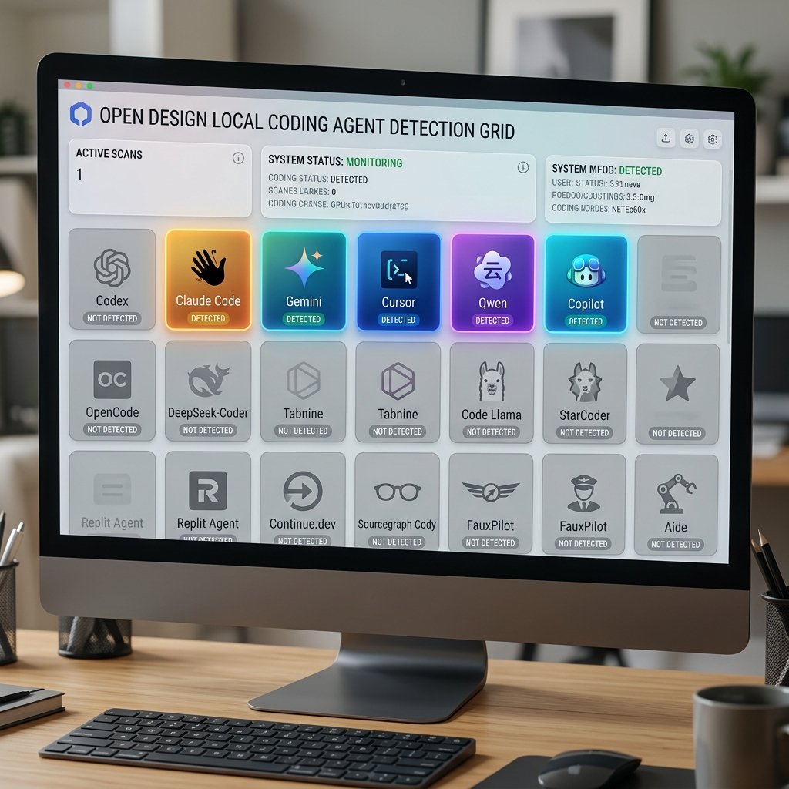
PATH and link to the install page. Supported set as of June 2026 includes Claude Code, OpenAI Codex CLI, Gemini CLI (sunset June 18, 2026 --- transitional), OpenCode, Cursor, GitHub Copilot, Qwen, and others. Connecting two agents lets you route by constraint rather than habit. Real screenshot of Open Design v0.9.0, captured June 2026.I run Claude Code as my primary generation agent and OpenCode as a fallback. Claude Code has the most complete MCP (Model Context Protocol) integration and the most thoroughly tested skill-invocation behavior as of June 2026. OpenCode (MIT license) provides vendor independence --- when a provider changes pricing or rate limits, I switch the routing in settings rather than rebuilding a workflow. The reasoning behind that choice is in Chapter 11.
Once you have a runtime selected, the model dropdown inside the runtime configuration popover lets you tune which model tier runs for a given session. This is where cost and latency trade-offs get made per-project rather than globally.
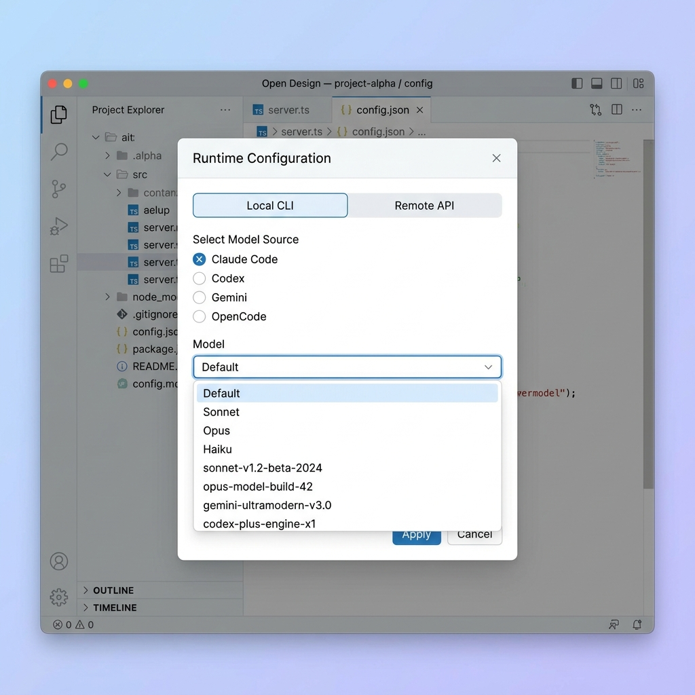
| Path | Setup cost | Inference privacy | Model flexibility | Best fit |
|---|---|---|---|---|
| Open Design AMR | None (no key, no deploy) | Cloud (Nexu-hosted relay) | Smart routing; Opus 4.8 default | Fastest first run; teams without a preferred CLI |
| Local coding agent | CLI already installed | Depends on provider; local model = local inference | Full: any CLI, any model the CLI supports | Teams with existing CLI subscriptions |
| BYOK | API key required per provider | Traffic goes to the chosen provider | Full: Anthropic, OpenAI, Azure, Google, Ollama | Cost control; enterprise key management |
The runtime screen is one of the better UX decisions in v0.9.0. Putting inference routing at the front means you think about it before you've invested an hour in a project --- not after. The AMR path is genuinely useful for readers evaluating Open Design before committing to a CLI subscription. For production work, I switch to the local agent path immediately: the model versions are pinnable, the cost is predictable, and the MCP surface is complete. Start with AMR to get oriented, then migrate.
D.1b The left navigation: every destination and when to use it
Open Design's left icon rail is the spine of the application. Every surface in the product is reachable from it in a single click, and each destination has a clear remit. The rail is narrow by design: seven items plus a settings gear. That constraint forces the product to have an opinion about what deserves a dedicated surface --- and understanding that opinion is the fastest way to orient yourself in the UI.
| Destination | What it is | When you'd use it |
|---|---|---|
New project (+ at top) |
Opens a fresh blank prompt with no project context attached | Spin up a one-off artifact --- a quick sketch, a throwaway experiment --- without touching any existing project tree |
| Home | The "What do you want to design?" launcher: prompt field, seven artifact-type tiles, recent-projects list, community gallery | Daily entry point; returning to the starting surface after navigating deep into a project |
| Projects | Every saved design, searchable and sortable; rename, archive, or organize into folders | Return to in-flight work; manage a large project inventory across multiple clients or product areas |
| Automations | Scheduled agent sessions; 24 templates across six categories including Orbit digests, "Extract design system", and "Crystallize successful run into skill" | Configure a nightly digest, auto-extract a design system from a live site on a schedule, or crystallize a successful generation run into a reusable recipe |
| Design systems | Manage your own brand systems; browse 150 official presets; access Enterprise-shared systems | Keep every artifact in a project on-brand; attach a new DESIGN.md before starting a client engagement; generate a design system from a live codebase |
| Plugins | Install, create, and distribute team workflows from the plugin registry (261 plugins as of June 2026) | Package a repeatable export pipeline into a single tool call; distribute a team-wide integration in one click from the Available tab |
| Integrations / Use everywhere | The full non-UI surface: od CLI reference, MCP server config, HTTP API documentation, and Skills & headless invocation |
Drive Open Design from Cursor or Claude Code via MCP; run headless generation in CI; wire a Slack bot to the HTTP API |
| Settings (gear, top-right) | Runtime selection, connected agents, API keys, daemon port, and language; the consolidated configuration surface | Switch model tier mid-session; rotate an API key; rescan for a newly installed CLI; change the daemon port if 7456 is already taken |
New project (+). The + icon at the top of the rail creates a fresh project slot with no prior context. There is no template picker, no copy-from-existing dialog, and no folder selector on this path --- it opens the blank prompt immediately. The use case is intentionally narrow: when you want to sketch something quickly and you don't want the agent to inherit context from a project you're mid-way through. One-off client requests, quick explorations, and proof-of-concept artifacts all belong here. Anything that deserves to persist gets moved to a named project later.
Home. The home surface is the application's daily entry point and the screen most readers will spend the most time on. Its prompt field, artifact-type row, recent-projects list, and community gallery are covered in full in D.2 --- see Figure D.4 for the full layout. Navigate here whenever you want to start a new generation without first choosing a project, or when you want to jump to a recent artifact in one click.
Projects. The Projects surface is where you supervise work at scale. As of v0.15.1 it is a kanban board grouped by run state --- Not started, Running, Needs input, Incomplete, Completed --- so paused agent turns queue explicitly for a human. Cards show name, design-system badge, origin, and date; Recent vs Your designs, search, and board/grid toggles sit in the top bar. Use it when you have more than a handful of in-flight runs. The full layout is shown in Figure D.7.
Automations. The Automations surface configures scheduled agent sessions --- jobs that run on a cron schedule without you at the keyboard. Twenty-four templates cover the most useful recurring jobs: ingesting a source URL into the memory tree, auto-extracting a design system from a live site, and crystallizing a successful generation run into a reusable skill. The full template grid is shown in Figure D.27. A concrete use case: an "Extract design system" automation set to weekly will catch brand drift on a client's live site before it contaminates your next artifact batch --- a two-line configuration that replaces a recurring manual task. See D.5 for the full automation catalog.
Design systems. The Design systems surface is where you attach the brand contract that all generated artifacts in a project inherit. The three-tab structure --- Your systems, Official presets, Enterprise --- navigates from your own DESIGN.md files to the 150 bundled presets to organization-shared systems in a single panel. The management panel is shown in Figure D.18; the presets library is shown in Figure D.19. Use it before starting any client engagement: attaching a design system up front is cheaper than retrofitting consistent tokens across a dozen artifacts after the fact.
Plugins. The Plugins surface is where team workflows become first-class tools. Installing a plugin takes one click from the Available tab; creating one opens an authoring flow. Once installed, a plugin's tools are callable by the agent in any session --- you don't have to remember the plugin is there or invoke it manually. The practical use case is packaging a repeatable multi-step export pipeline (version comment, changelog update, Slack notification) into a single tool so every team member runs the same steps with zero manual coordination. The full plugins surface is shown in Figure D.23. See D.5 and Chapter 09 for the authoring model.
Integrations / Use everywhere. The Use everywhere page is the gateway to every non-UI surface: the od CLI, the MCP server, the HTTP API, and Skills & headless invocation. It is linked from the home header as a persistent shortcut precisely because teams with existing agent CLIs often live here rather than in the Electron window. The overview and all five sub-tabs are covered in D.6; the integrations overview is shown in Figure D.28. Use this destination to connect Open Design to Cursor, Claude Code, or any MCP client --- or to set up headless CI generation.
Settings. The Settings gear in the top-right corner of the rail opens the consolidated configuration panel: runtime selection, connected agents, API keys, daemon port, language, and advanced daemon flags. It is not a passive reference page --- it is the surface you revisit every time the environment changes. The most common operations: clicking Rescan after installing a new CLI (the agent grid won't update automatically), rotating an Anthropic or OpenAI key, and adjusting the daemon port when 7456 conflicts with another local service. The full panel is shown in Figure D.34. Switching model tier mid-session --- say, from Opus to Sonnet for a rapid iteration cycle --- is a single dropdown change here and takes effect on the next generation run.
D.2 The home surface and artifact types
Past the runtime gate, the home surface opens on a single composer. There is no blank canvas and no empty project tree --- the interface asks what you will design with your agent today, then lets you attach template, mode, agent, design system, and working directory before you send.

By v0.15.1 the home surface no longer leads with seven fixed artifact-type tiles as the primary control. The composer carries a Template picker (project types such as Website clone, Slide deck, Prototype, Wireframe, Mobile, Document, HyperFrames, WebGL, Live artifact) plus Ask / Plan / Design modes. Artifact family still matters --- templates and skills encode it --- but the daily ritual is set-the-levers-then-send, not pick-a-tile-then-type.

The table below still maps common output families to chapters. Prefer the template strip and skill picker for the live UI; use the table as a reading map.
| Tile | Output format | Concrete use case | Chapter |
|---|---|---|---|
| Prototype | Self-contained HTML file | Interactive UI mockup for a new feature; stakeholder review before engineering begins | Ch 03, Ch 06 |
| Live artifact | Deployable component wired to a connector | A dashboard tile that reads from a live API; an embedded form that writes to a database | Ch 07 |
| Slide deck | Presentation-grade HTML with print layout | Investor pitch deck; design review for a new brand system; team onboarding walkthrough | Ch 06 |
| Image | Generated raster (PNG/JPEG) | Hero image for a landing page; concept illustration for a product spec; brand photography stand-in | Ch 07 |
| Video | MP4 or animated export | Product demo clip; explainer for a new feature; social-media ad creative | Ch 07 |
| HyperFrames | Animated HTML rendered to MP4 | Motion design with frame-accurate timing; scroll-based narrative; CSS animation exported for distribution | Ch 07 |
| Audio | Generated voiceover or sound effect | Narration track for a product video; sonic branding sample; accessibility audio description | Ch 07 |
The Slide deck type is worth examining separately because the mode controls it exposes are distinct from the other types. When you select it, the interface surfaces a dedicated mode panel before the brief form: design system selector, page-count control, and a Notes toggle (which adds presenter-notes sections below each slide). The rendered deck thumbnails appear in the design files panel as a sequence, one card per slide, so you can review the arc before opening any individual slide. Use this path for investor pitches, design reviews, and team onboarding walkthroughs where you need a coherent narrative across more than a handful of pages.

The prompt field accepts a one-line brief. Typing it is the fastest path to a first generation: select an artifact type, type your intent, hit send. The interface displays the selected model alongside the send affordance so you know --- before the run starts --- which model will execute the generation and what it will cost.
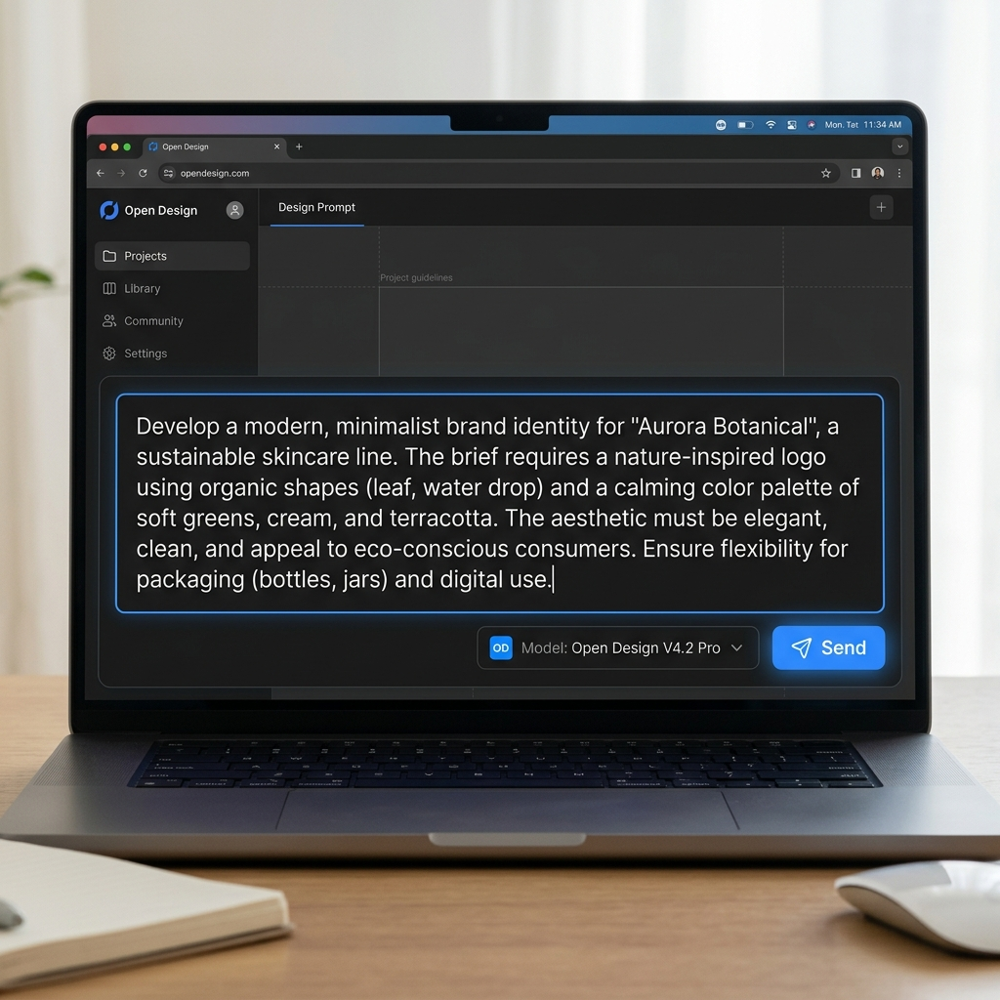
The Use everywhere link in the header is a persistent shortcut to the integrations surface covered in D.6. The Local CLI link opens the CLI tab of that same page. Both are reachable from every screen --- they're in the global navigation, not buried in settings.
As your project count grows, the recent-projects list on the home surface becomes your primary navigation. Each entry shows the project name, artifact type, last-modified timestamp, and a thumbnail of the most recent artifact. If you need to manage projects at scale --- archive, rename, or organize into folders --- the dedicated Projects surface has the full control set.
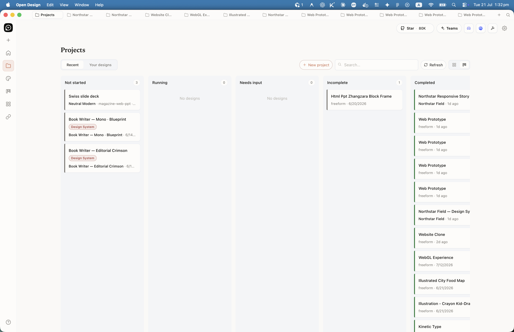
Below the recent-projects list, the home surface carries a community gallery: a scrollable row of plugin and template examples submitted by Open Design users. The gallery is not decorative --- it is a browsable catalog of what others have built that you can use as a starting point. If you are beginning a project type you haven't attempted before (a pricing page, an onboarding flow, an analytics dashboard), scanning the gallery takes thirty seconds and regularly surfaces a community template that is closer to your intent than a blank prompt. Selecting a gallery entry opens its detail card with an install or fork button. The practical use case: before writing a brief for a new artifact type, browse the gallery first. You may find a community template that handles ninety percent of the structure and only needs a brand swap.
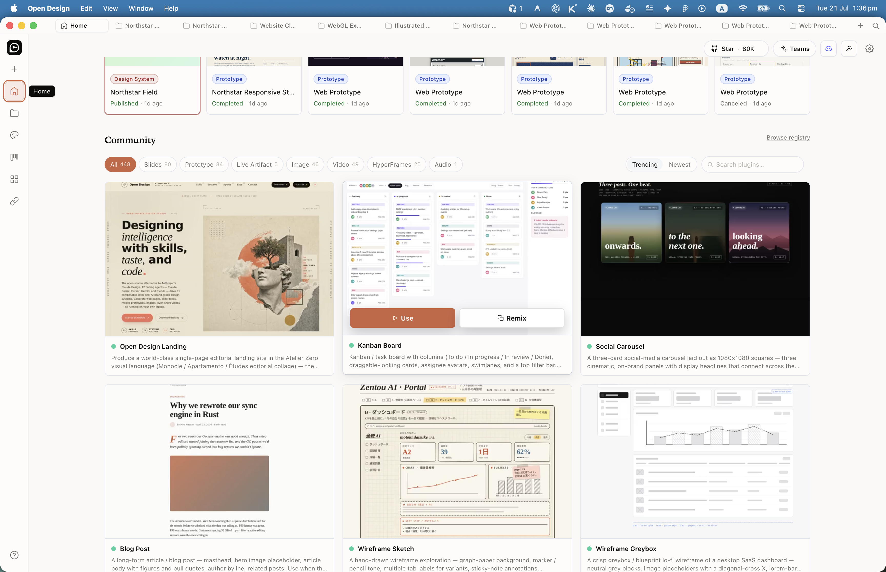
D.3 The generation loop
The generate-to-export cycle is Open Design's core workflow. The style guide for this book calls it the four-beat loop: generate, preview, iterate, export. The UI surfaces this loop across three screens that you move through in sequence on every project: the project workspace, the interactive brief form, and the live streaming view during generation. Understanding what each screen is doing prevents the two most common beginner mistakes --- skipping the brief and treating the first generation as final.

The conversation starters in the chat pane deserve attention. They are not generic suggestions; they are derived from the current project state and the skill that generated the last artifact. After a landing-page run, the starters might offer "Change the hero to a video background," "Add a pricing section below the fold," and "Export for stakeholder review." They compress what would otherwise be a prompt-recall problem into a one-click operation. As of v0.15.1 the same surface also exposes NEXT STEP chips with a More overflow --- see Figure D.9a.

Before Open Design sends your prompt to the agent, it optionally runs an interactive brief form. This step is driven by the skill's recipe: if the skill defines intake fields, they surface here. If the skill defines no intake fields, the brief form is skipped and the prompt goes directly to the agent. The brief form is the mechanism by which Open Design asks before it improvises a pixel.
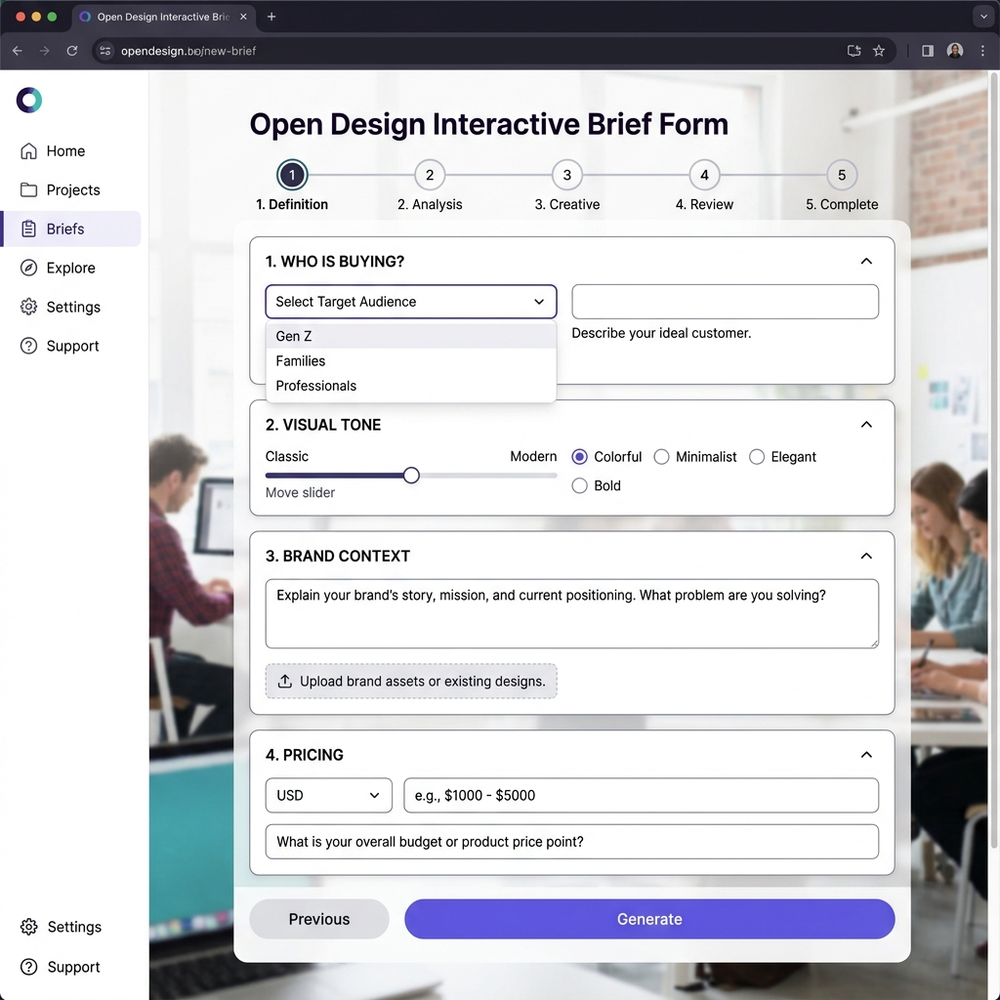
The brief form also serves as a forcing function for your own clarity. If you can't answer "Who is buying?" in one sentence, the artifact prompt won't be specific enough to produce a useful first generation. The form turns vague intent into structured input before any tokens are spent. That's cheaper than generating and iterating toward clarity after the fact.
Once the brief is submitted, the agent begins streaming. The generating view shows each phase of work in real time: initialization (loading the skill, design system, and brief), thinking (the model reasoning step, where applicable), and working (artifact construction, token by token). You can watch the stream or navigate away and return when the generation is complete.
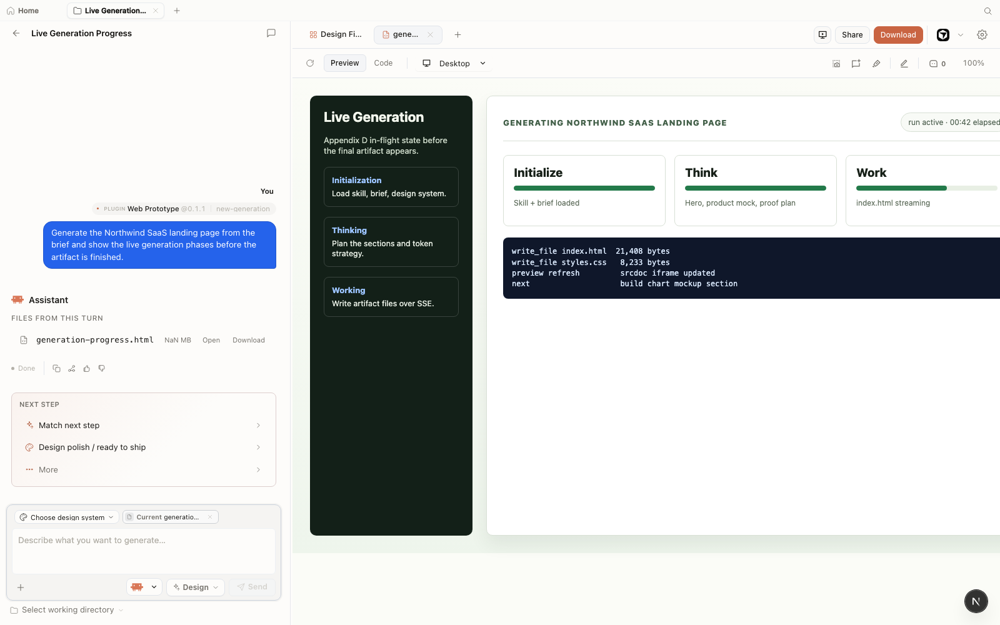
When streaming ends, the generation surface resolves into the finished artifact. What was a live progress panel becomes the rendered output --- a self-contained HTML file that the agent assembled token by token from the brief you provided. The Northwind example below shows a complete product landing page: a hero with a query-to-SQL-to-chart product mockup, a "Plain English to governed SQL" value proposition, and a "Start free" CTA. The full artifact was generated from a one-line prompt against a brief that the skill's intake form captured in four fields. Prompt → brief → streamed generation → self-contained HTML artifact: that is the complete loop.
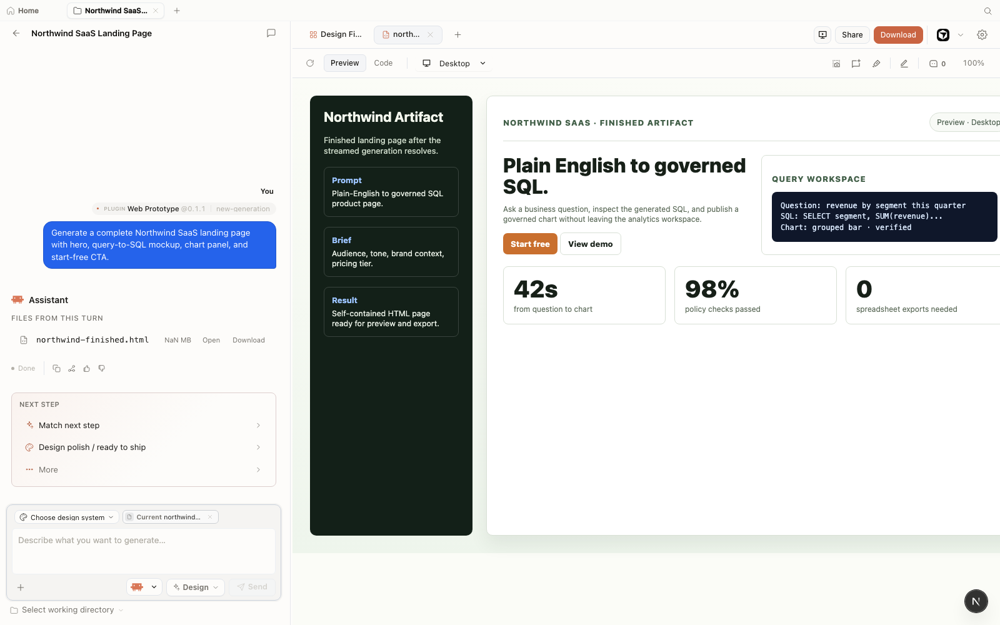
The artifact doesn't open in an external browser. It opens in the in-app preview pane alongside the agent's run summary. The left panel shows what the agent delivered --- which sections it built, what the run cost, how long it took. The right panel renders the artifact at full fidelity. Three toggle tabs at the top let you switch between Preview (the rendered page), Code (the raw HTML source), and Desktop (a wider viewport that simulates a production breakpoint). This is the review surface: examine the artifact, read the code, identify what to change, and type your next instruction in the chat pane below.
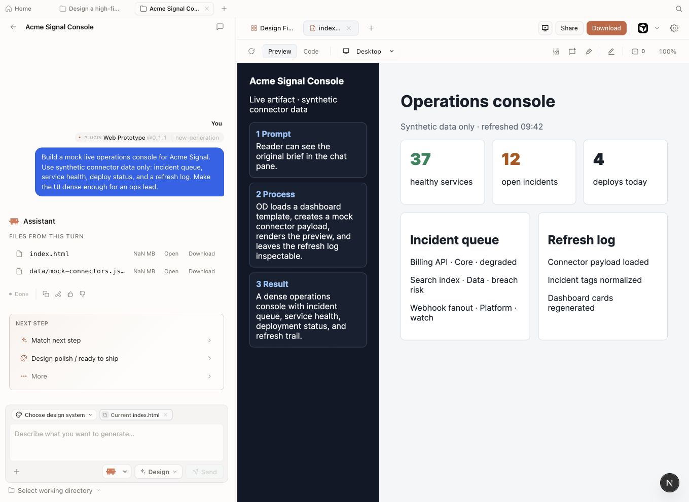
Inspecting the source: the Code view
The Code tab in the preview pane exposes the full HTML source of the generated artifact. This is not a minified bundle --- it is readable, commented source. Every Open Design artifact opens with a DESIGN TOKENS block inside a :root CSS custom-property declaration: an oklch color palette, a typography scale (step labels mapped to font-size and line-height), a spacing scale (8-point grid expressed as --space-* variables), and a border-radius set. The rest of the artifact references these tokens throughout. Use case: your engineering team is handing off a prototype to production. Opening the Code view confirms that the output is token-driven design-as-code --- every visual decision is an explicit variable in the :root block, not a hardcoded hex value buried in a selector. The handoff conversation changes from "can you match this screenshot?" to "here are the token values; implement against these."

Token-driven output is the difference between an artifact that can be maintained and one that can only be regenerated. When every color, size, and spacing decision is a named variable in the :root block, a developer can update the brand by changing six lines. When those decisions are scattered as hardcoded values across three hundred selectors, updating the brand means touching every rule and hoping nothing was missed. The Code view is the fastest way to audit whether a generation is production-viable or whether it hardcoded values the brief didn't constrain. If you see raw hex values or pixel literals outside the token block, that is a signal to tighten the DESIGN.md before the next run.
When the artifact is ready to leave Open Design, the Share / Export menu lists every available output format. A prototype artifact exports as standalone HTML, PDF, PPTX, a ZIP archive, Markdown source, or a deployed URL on Vercel or Cloudflare Pages. Export format availability depends on artifact type: video and HyperFrames artifacts add MP4 to the menu; slide decks add PPTX; live artifacts add a deploy path. The honest version: check the export menu for your specific artifact type rather than assuming all formats apply to everything.

The preview renders inside a sandboxed srcdoc iframe that resolves external assets from the live browser context. The exported HTML file resolves assets differently. An artifact that looks correct in the preview can have broken images or missing fonts in the exported file when those assets are loaded from an external URL. Always open the exported HTML file with network access disabled before treating it as done. This is the failure mode documented in Appendix C.3.
The first generation rarely ships unmodified. The four-beat loop expects iteration: generate, preview, follow-up in the chat pane, repeat. When the artifact is right, you export from the design files panel. Chapter 03 walks this loop step by step; Chapter 08 covers the export pipeline and the divergence behavior between preview and exported file.
D.3b Editing, comments, and feedback — refining in place
Re-prompting is not always the right tool for a small change. When the layout is good and you want to nudge a heading colour, tighten a line height, or adjust a background, a full generation round-trip costs time and tokens and risks drifting the parts of the artifact you were happy with. Open Design provides three lighter-weight refinement mechanisms that sit between "looks good" and "prompt again": the in-canvas visual editor, the Comments panel, and the thumbs-up / thumbs-down run rating.
The in-canvas visual editor
The visual editor is accessed by clicking Edit in the preview toolbar. In edit mode, clicking any element in the rendered artifact selects it and opens a properties panel on the right side of the screen. The panel exposes two scopes of control. Element-level properties cover typography: font family, font size, weight, colour, alignment, and line-height. Page-level properties cover the artifact's global canvas: background colour and base font. Every change applies live to the preview. When you're done, clicking Save writes the change back to the artifact source without triggering a re-generation --- the HTML is patched in place.
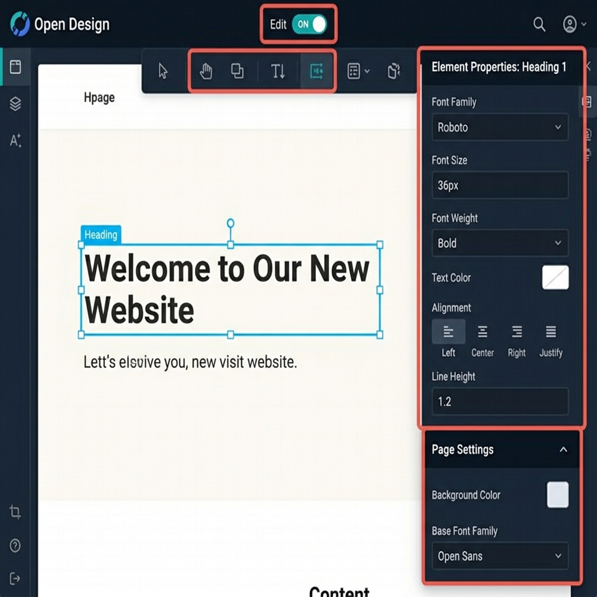
The editor's scope is intentional. It covers typographic and color properties --- the surface-level adjustments that account for the majority of post-generation tweaks. It does not expose layout rules, component structure, or JavaScript behavior. That is the right boundary: layout and behavior changes affect the artifact's semantic structure and warrant a re-prompt so the agent can maintain internal consistency. A heading-colour nudge or a background swap does not.
The Comments panel
The Comments panel is Open Design's mechanism for async design review. To drop a comment, click the Comment tool in the preview toolbar and then click any element in the rendered artifact. A pin appears at the click target and a text input opens. The comment is stored against the element --- not as a floating annotation but as a reference tied to the specific DOM node you clicked. All comments on the artifact collect in the Comments side panel, which lists each comment with its target element, author, and timestamp. Pinned comments are visible in the preview as numbered markers.
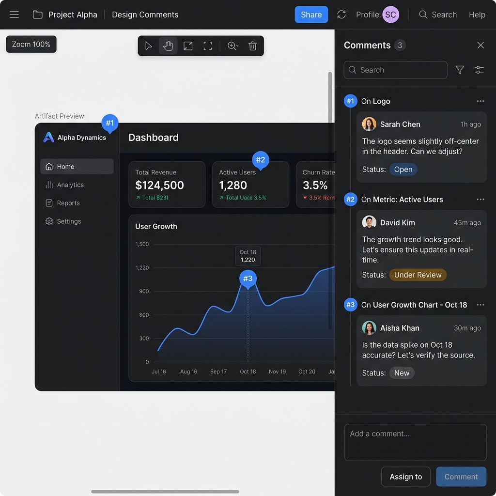
The use case is async design review and handoff. When you share an artifact with a stakeholder or a developer, they can open the project, read the artifact in Preview mode, and drop comments directly on the elements they want to flag. You return to the project later and see every note pinned to its exact location in the rendered output --- no "third paragraph from the top, the blue one" ambiguity. Comments don't trigger generation and don't cost tokens. They're a lightweight communication layer on top of the artifact, which is where design feedback belongs.
Run ratings and per-turn cost
Every completed agent turn in the chat pane carries two pieces of metadata that appear alongside the "Done" marker: the run cost (in USD) and the elapsed time. These are not buried in a log --- they appear inline in the conversation so you build intuition about what different generation types cost and how long they take. A first-generation landing page runs around $0.60--$0.80 at Opus 4.8; a follow-up iteration that modifies one section costs closer to $0.10--$0.20. Seeing the cost at each turn is the fastest way to learn where to use a lighter model tier.
Each completed turn also carries a thumbs-up / thumbs-down rating control. Rating a run sends a signal to the harness: a thumbs-up marks the generation strategy as successful for this brief type; a thumbs-down marks it for deprioritization in future runs on similar briefs. The signal is used by the harness to weight skill selection and model tier choices in subsequent sessions for your account. It is not a global training signal --- it shapes your agent's behavior, not another user's. The practical use case: if a run produces an artifact that's exactly what you wanted, rate it up. If the agent took the brief in a direction you'll never want again, rate it down. Two clicks of steering is cheaper than two paragraphs of corrective prompting.
The edit-in-place and re-prompt paths are not interchangeable. Re-prompting is the right call when the generation got the structure wrong, chose the wrong layout pattern, or missed the brief in a way that affects more than one element. Edit-in-place is the right call when the structure is correct and you want to adjust one property --- a colour, a font size, a heading weight. Using re-prompt for a single color tweak costs tokens and risks regressing the parts you were happy with. Using edit-in-place to fix a structural problem just moves deck chairs. The heuristic: if the change requires updating more than three properties across more than two elements, re-prompt. If it's one element and one property, reach for the editor.
D.4 Design systems
The design-system layer is where Open Design's brand-contract model becomes concrete. Before generating a single artifact, you can attach a DESIGN.md --- one you authored, one from a team library, or one from the 150 bundled presets. Every subsequent generation in that project inherits the color ramp, type scale, spacing rhythm, and component rules defined in that file. The brand contract --- colors, type, voice, component rules --- is the durable layer that persists across every artifact in a project.

The Your systems tab is where you attach a DESIGN.md you've authored. If you've followed the workflow in Chapter 05, your brand contract is already versioned in git alongside your project files. Pointing Open Design at it takes one click. The system is then "active" for the project: every generation prompt is prefixed with the DESIGN.md context before the model sees your brief.

The Official presets tab opens the bundled library of 150 brand-grade design systems. These ship with the repository and are available offline. Each preset is a complete DESIGN.md with color tokens, type scale, spacing rhythm, and component guidelines --- built as a reference model, not as a license to ship that brand's identity commercially.
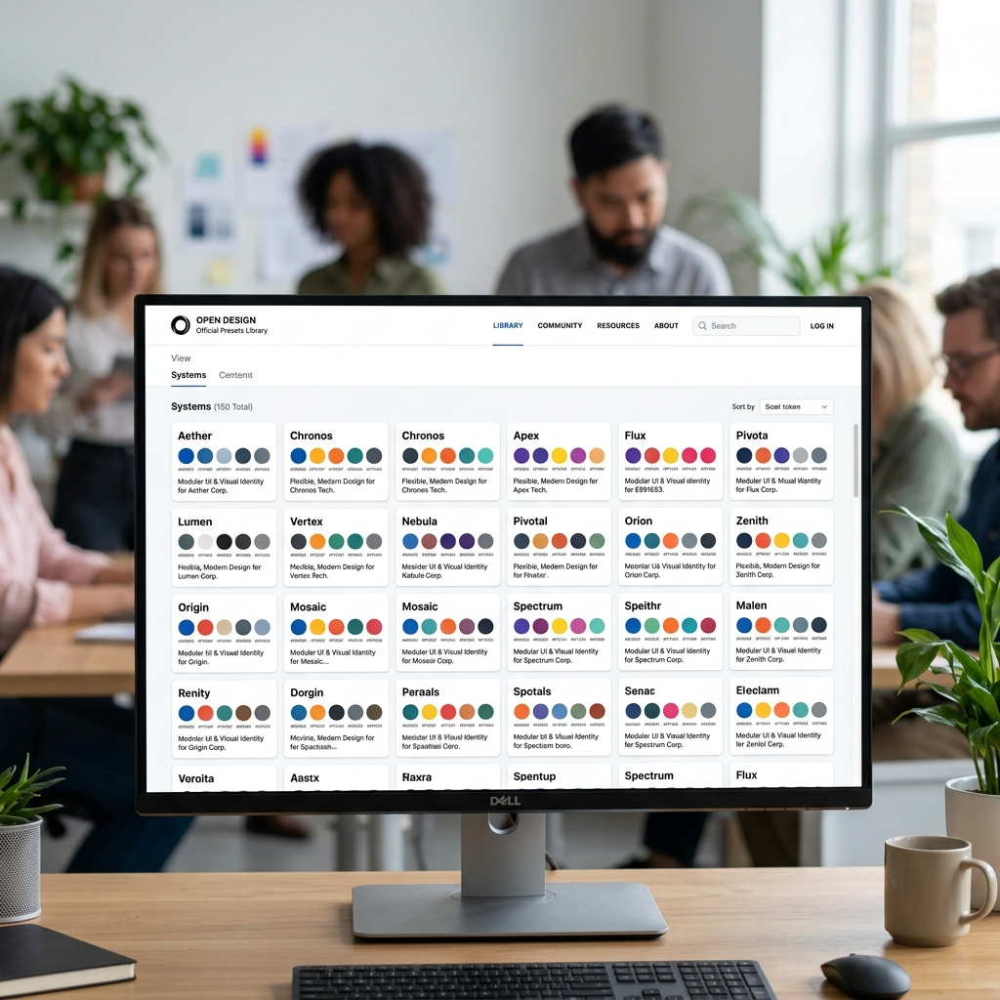
The 150 bundled presets are useful for one thing: showing what a well-structured DESIGN.md looks like at scale. I don't use them in production work. The fastest path to a coherent artifact series is a DESIGN.md you authored against your actual brand --- even a thin one covering only color and type. A 40-line custom system beats a 400-line borrowed one because the agent has no ambiguity about which tokens are load-bearing. Use the presets to learn the schema, then author your own. Chapter 05 is the right starting point.
The Template tab on the design systems panel addresses a different problem from brand systems. A brand system defines visual identity --- colors, type, spacing, and component rules. A template defines structural identity --- the layout scaffold and information architecture of a particular artifact type. Templates are useful when you want to start from a proven structural pattern (a SaaS landing page, a three-column dashboard, an onboarding wizard) and then apply your brand on top. The two concepts are composable: you select a structural template and a brand system and the generation step has both constraints to work within. Use case: your team builds SaaS dashboards for multiple clients. You have one structural template that defines the shell (nav, sidebar, content area, header), and each client gets their own brand system attached. Every client's artifact starts from the same proven layout and ends with their own visual identity.
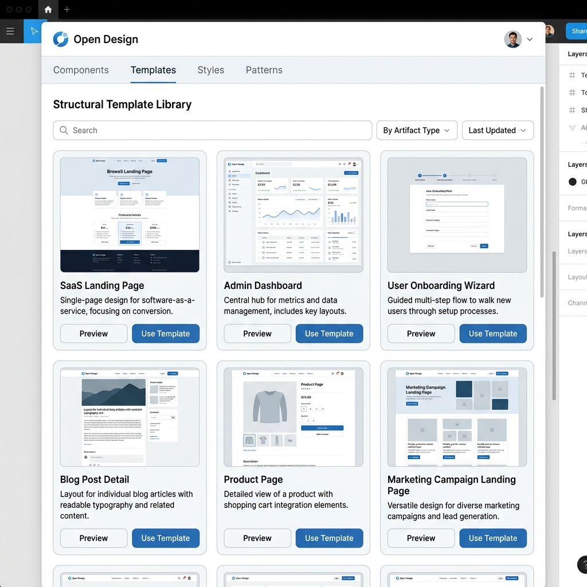
The Enterprise tab on the design systems panel is where org-managed brand systems appear. Where Your systems holds files you've authored locally and Official presets holds the 150 bundled references, Enterprise is populated by your organization's Open Design admin. When an admin publishes a canonical brand system to the org registry, it appears in this tab for every team member automatically --- they don't need to find, download, or attach it manually. Updates to the canonical system propagate to all members on the next sync. Use case: a multi-brand organization where different teams work on different products. The design ops team publishes one canonical brand system per product line to the Enterprise tab. Every designer using Open Design starts their next artifact already inheriting the correct brand contract, with no manual file management and no risk of working from a stale preset.
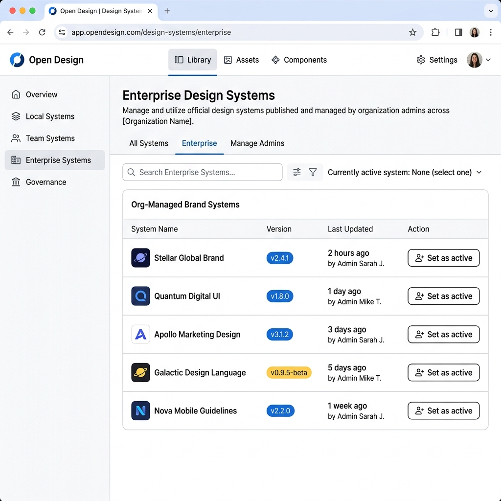
D.4b Generating a design system from your own material
The "Create new design system" button at the bottom of the design systems panel opens a flow that the bundled presets panel can't replace: generating a DESIGN.md from your own brand material. Open Design accepts four input types --- a brand brief (free text), a GitHub repository URL, a local file path, and a Figma or other asset bundle. The agent inspects the material, extracts color tokens, type scale, spacing rhythm, and component patterns, and writes a structured DESIGN.md that you review and confirm before it becomes active in your project.
The practical consequence is that you teach Open Design your house brand once. Every subsequent artifact in every project that uses this design system inherits the brand contract automatically --- without you re-specifying colors, fonts, or component rules in every prompt. When the brand evolves, you re-run the extraction against the updated material and the diff surfaces what changed. Brand drift across artifacts becomes a diffing problem, not a prompt-hygiene problem.
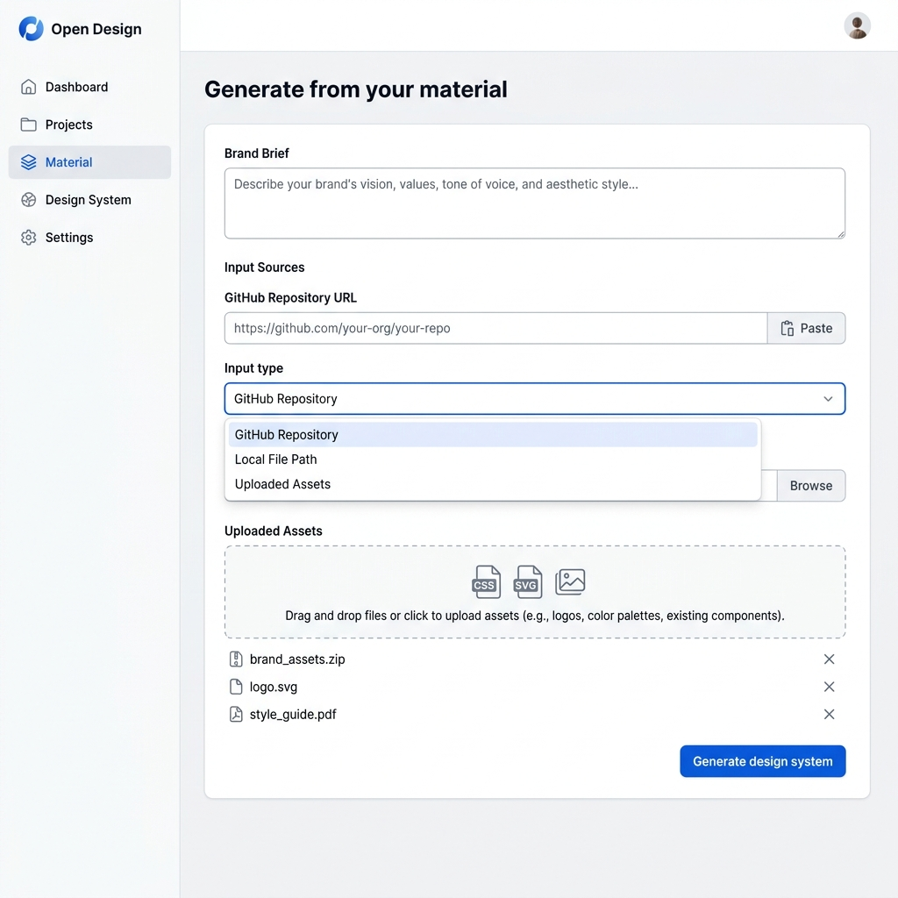
D.5 Plugins and automations
Skills make; plugins do. Skills are the recipes the agent follows to generate an artifact. Plugins are the extensions that give Open Design new behaviors --- new tool connections, new export formats, new UI panels, new automation triggers. The two surfaces work together: a plugin can invoke a skill, and a skill can depend on a plugin's tool. As of June 2026, Open Design ships 261 plugins across its registry.

The concrete use case for plugins is packaging and distributing a team workflow. Say your team has a standard export step: every prototype gets a version comment injected, a changelog updated, and a Slack notification sent. Without a plugin, each team member runs those steps manually or copies a script. With a plugin, the steps are encapsulated into a single tool call that any agent can invoke. The plugin installs in one click from the Available tab and is available in every Open Design session from that point forward. Chapter 09 covers authoring and distributing plugins from first principles.
The Available tab inside the Plugins surface is the marketplace catalog. It lists every plugin published to the configured registry sources, with provenance tags (Community, Official, Verified) and per-plugin detail cards that include description, version history, and an Install button. Two catalog entries visible in v0.9.0 are instructive: Community Registry Starter (a scaffold for bootstrapping a private plugin registry for a team) and Community Import Smoke Test (a validation plugin for verifying a registry import). Use case: discovering and installing a community plugin from a configured marketplace is a two-step operation --- find the entry in the Available tab, read the provenance tags and detail card, click Install. The plugin is active in your environment and available to the agent in the same session.

The Sources tab controls which marketplace catalogs Open Design pulls from when populating the Available tab. By default, the official Open Design registry and a local source are configured. Teams can add their own catalog endpoint here --- a private registry hosted on the team's infrastructure or a static JSON file on an internal URL. Once a source is registered, its plugins appear in the Available tab alongside official ones. Use case: your team maintains a private catalog of internal plugins that you don't want published to the public registry. Add the catalog's URL in the Sources tab; from that point forward, every team member who has the same source configured sees the team's private plugins in their Available tab, versioned and installable from the same surface as official plugins.
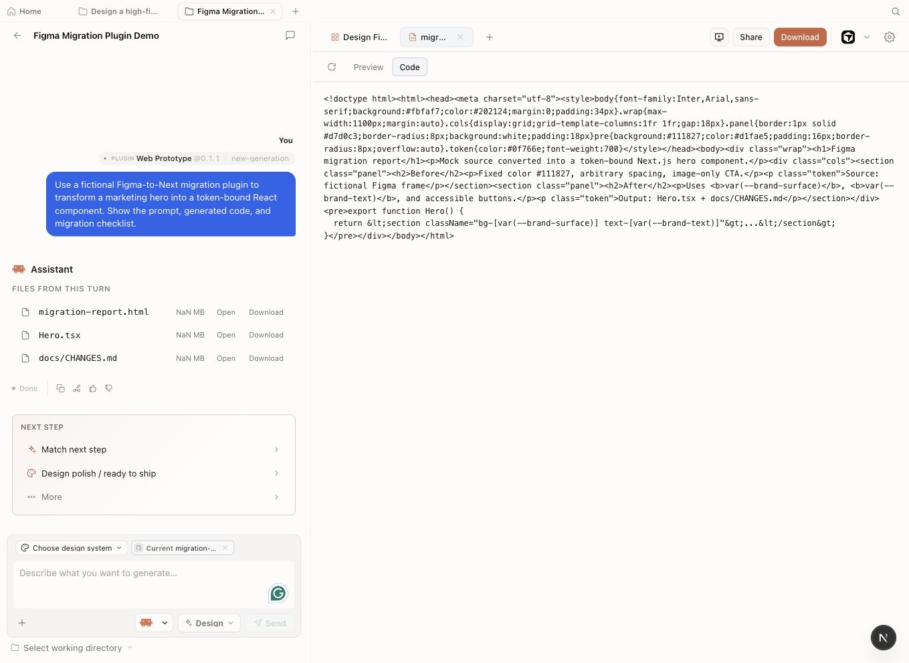
The Team tab (labeled Enterprise in some builds) is the org-distribution surface for plugins. Where the Available tab lets individual users browse and install, the Team tab is where an organization admin pushes vetted plugins to all members of the org simultaneously. A plugin promoted to the Team tab is automatically available in every member's Installed list --- they don't install it manually and they can't uninstall it without admin access. Use case: your organization has standardized on a set of export and compliance plugins. The admin promotes those plugins to the Team tab; from that point, every designer in the org runs the same set of tools in their Open Design sessions, with no coordination required. New members get the full plugin set on first login.
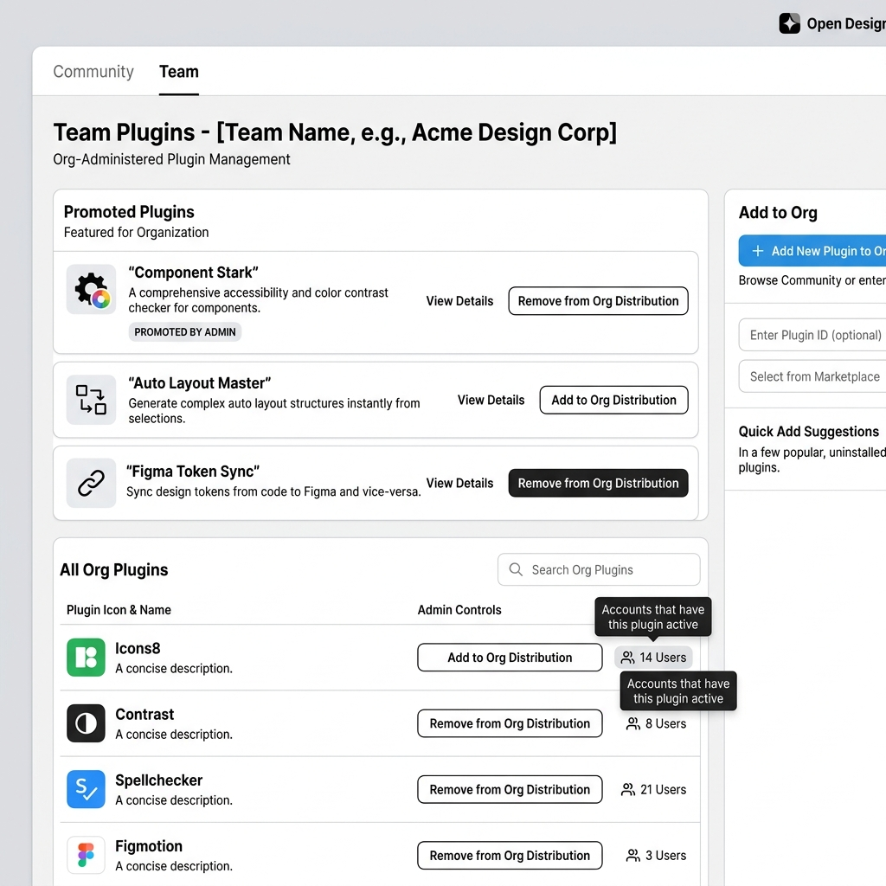
Automations extend the plugin model into time. The Automations surface is where you configure scheduled agent sessions --- jobs that run on a cron schedule without you sitting at the keyboard. As of June 2026, Open Design ships 24 automation templates across six categories: Orbit, Live artifacts, Memory, Design systems, Skills, and Connectors.
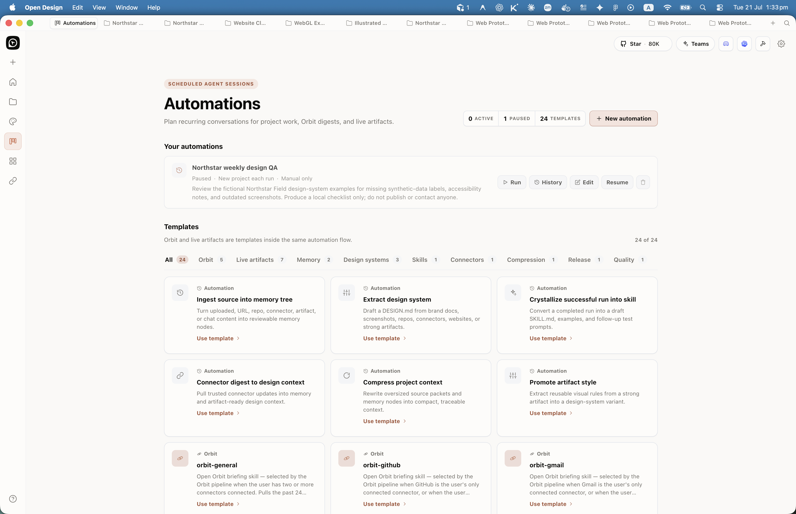
Three automation templates are worth calling out explicitly because they demonstrate the range of what a scheduled session can do:
- Ingest source into memory tree. On a daily schedule, the agent fetches a URL or a directory, extracts structured content, and writes it into the project memory store. Use this when a reference source --- a competitor's design system, a client's live site, a style guide PDF --- needs to stay current in the agent's context without manual re-ingestion.
- Extract design system. On a weekly schedule, the agent visits a target URL, extracts color tokens, type scale, spacing rhythm, and component patterns, and updates the project's DESIGN.md. Use this for teams whose brand evolves in a separate tool --- Figma, a website, a CSS file --- and want Open Design to track the delta without manual diffing.
- Crystallize successful run into skill. After a generation run that produced an artifact you're happy with, this automation packages the run's prompt, skill invocation, and design system state into a reusable skill recipe. Use this when you've iterated to a pattern that works and want to reproduce it reliably rather than reconstructing the prompt from memory.
The automations surface is the most underused feature in my current Open Design setup. I set up the "Extract design system" automation for a client project and it caught a brand drift I wouldn't have noticed for two weeks --- a spacing-rhythm change on their live site that would have made my next batch of artifacts look subtly wrong. The 24 templates are well-chosen starting points; the real value is in the three or four you wire to your actual workflow and forget about. Start with the memory ingestion and design-system extraction templates. See Chapter 09 for the plugin and automation authoring model.
D.6 Use everywhere: CLI, MCP, HTTP, headless
The Electron window is one way to run Open Design. It is not the only way, and for many production workflows it is not the right way. The Use everywhere page --- linked from the home header --- documents all four non-UI surfaces: the od CLI, the MCP (Model Context Protocol) server, the HTTP API, and the skills-and-headless interface. One server, many brains: the same daemon that powers the Electron UI also serves every one of these surfaces simultaneously.

Each tab exposes a different surface in full. The screenshots below show each sub-tab as it appears in v0.9.0.
The Connectors tab is the gateway to external data sources. It is backed by Composio --- a connector runtime that abstracts OAuth and API-key management for over four hundred external services. To activate a connector, you paste a Composio API key into the field at the top of the tab; the key is stored locally and never transmitted to Open Design's servers. Once a key is configured, the searchable connector grid appears: each tile represents one external service (Notion, Airtable, Slack, Salesforce, GitHub, and hundreds more). Activating a connector makes its data surface available to any Live artifact you generate. Use case: your team builds live-artifact dashboards that display data from Notion databases. Without a connector, the dashboard shows placeholder data; with a Notion connector activated, the agent can wire the artifact directly to a live Notion database at generation time --- a real data source, not a mock. The dashboard updates whenever the underlying Notion data changes. This is what distinguishes a live artifact from a prototype.

The CLI · od tab is a full command reference, not a summary. Every od subcommand is shown with copy-paste examples: od media generate, od run, od plugin install, od skill list (plural alias od skills list is also supported), od design-systems list, od status, and od doctor. Use this tab as the primary reference for driving generation from a shell or CI pipeline: the examples are runnable verbatim and include the flag set you'll reach for most often. The od doctor command deserves a call-out --- it performs a self-check of the daemon, connected agents, and API keys and reports any misconfiguration in a single structured output. Run it first whenever something doesn't work before reaching for manual diagnostics.
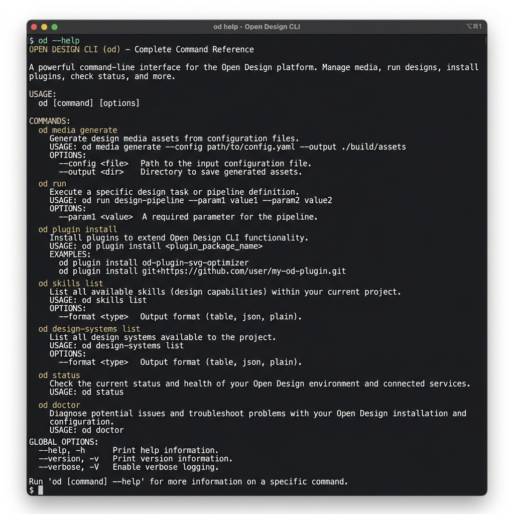
od · CLI tab. Full command reference for the od binary: every subcommand is shown with runnable examples. The most useful commands for CI work are od media generate (headless artifact production), od run (execute a named skill), and od doctor (self-check daemon + agents + keys). Copy any example directly --- the format is stable across patch versions. Real screenshot of Open Design v0.9.0, captured June 2026.The MCP server tab shows the copy-paste mcpServers configuration block for each supported agent CLI. The block sets command to od and args to ["mcp", "--daemon-url", "http://localhost:7456"]. Paste it into the mcpServers section of your Claude Code ~/.claude/settings.json, or the equivalent config file for Cursor, Antigravity, or GitHub Copilot. After restarting the agent, Open Design's tool surface --- generate, attach design system, export, preview, run skill --- is callable from within any agent conversation without opening the Electron window. One daemon, every agent.

The HTTP API tab documents the REST interface served by the daemon. The daemon at localhost:7456 accepts generation requests as HTTP POST calls and streams artifact events over SSE (server-sent events). A CI job can POST a generation request, open an SSE stream to receive progress events, detect the completion event, and pull the exported artifact file --- all without a human at a keyboard and without the Electron window running. The tab shows the endpoint list, the request schema, and example curl invocations.
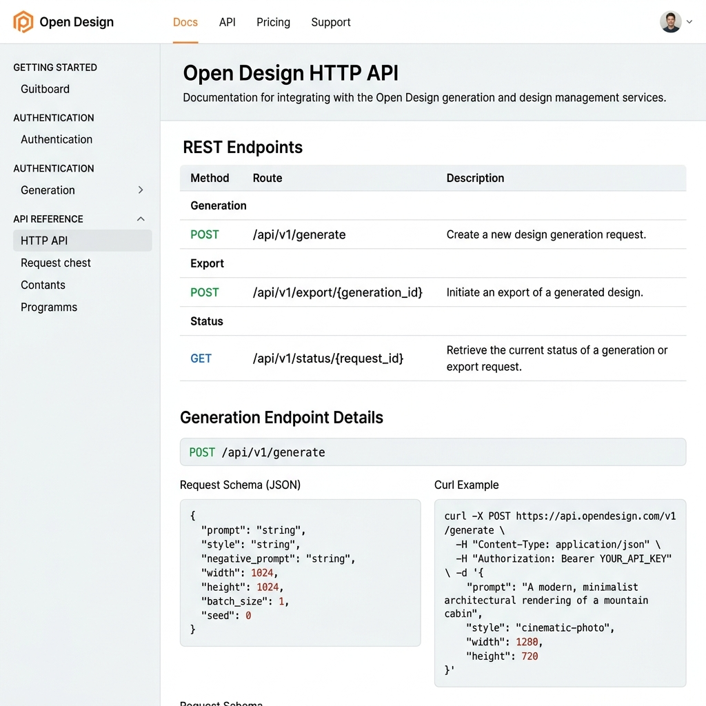
The Skills & headless tab covers programmatic skill invocation: running a named skill with a JSON payload, piping output to a file, and chaining skill runs into a batch pipeline. It is the reference surface for the od skill run <skill-name> --json pattern used in the CI examples throughout Chapter 16.
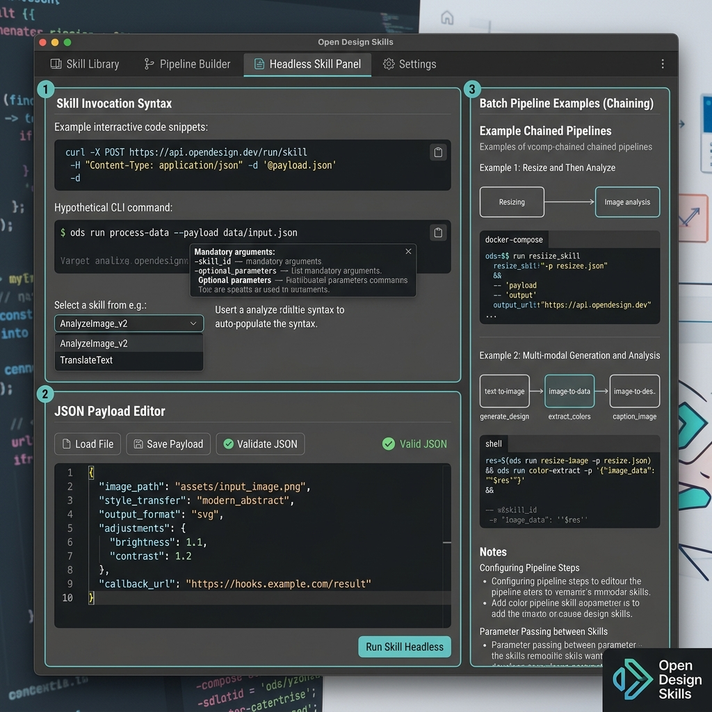
The MCP server is the surface most readers reach first. Running od mcp install claude-code writes the server entry to Claude Code's ~/.claude/settings.json under the mcpServers key. After restarting the agent, Open Design's full tool surface --- generate artifact, attach design system, export, run a skill, preview --- is callable from within a Claude Code conversation without opening the Electron window. Every CLI has a corresponding install command; run it once per CLI you use.
| Surface | Entry point | Primary use case | Chapter |
|---|---|---|---|
| Electron UI | pnpm tools-dev or the installed app |
Interactive generation, brief filling, visual preview, project management | Ch 02, Ch 03 |
od CLI |
od generate, od export, od status |
Scripted generation, CI pipelines, headless iteration, batch runs | Ch 13 |
| MCP server | od mcp install <agent-cli> |
Calling Open Design tools from within any supported agent CLI conversation | Ch 10 |
| HTTP API | http://localhost:7456 (daemon default) |
Custom tooling, webhooks, external orchestration, Slack bots | Ch 10 |
| Skills headless | od skill run <skill-name> --json |
Programmatic skill invocation, batch generation, CI artifact production | Ch 04, Ch 16 |
The HTTP API deserves separate attention for teams building integrations. The daemon at localhost:7456 serves a REST interface with SSE (server-sent events) streaming for artifact events. A CI job can POST a generation request, stream the SSE events to detect completion, and pull the exported artifact file --- all without a human at a keyboard. Chapter 10 covers the MCP server in depth; Chapter 16 shows how to thread the CLI and HTTP surfaces into a complete delivery pipeline. Chapter 12 covers running multiple agents against the same daemon for fan-out generation.
D.7 Settings
The settings panel consolidates everything the onboarding screens collected --- runtime selection, connected agents, API keys, and daemon configuration --- into a single place. It is also where you rescan for newly installed CLIs, rotate API keys, change the daemon port if 7456 is already taken on your machine, and switch the application language. The settings panel is the stable-state configuration surface; the terminal is the diagnosis surface.
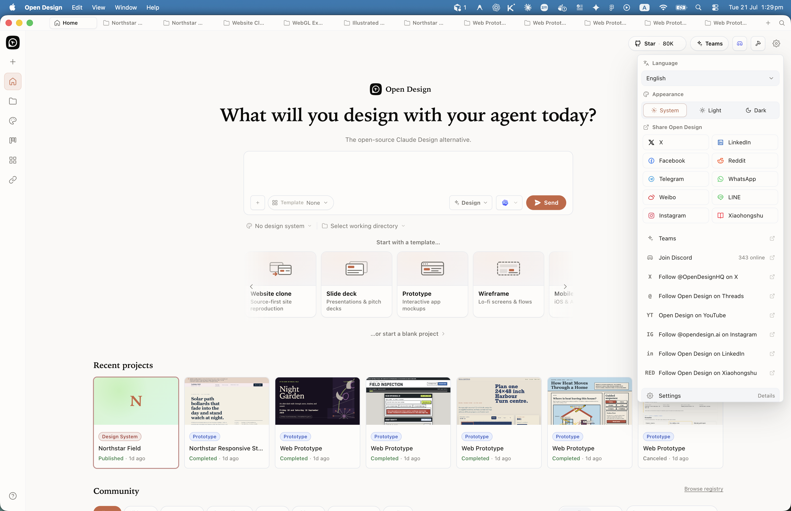
Teams (beta). The gear menu exposes a Teams entry for org-shared projects, design systems, and plugin distribution. As of v0.15.1 the surface is labeled beta --- expect layout and capability changes between releases. Use it when more than one designer needs the same canonical brand contract or automation set without manual file sharing.
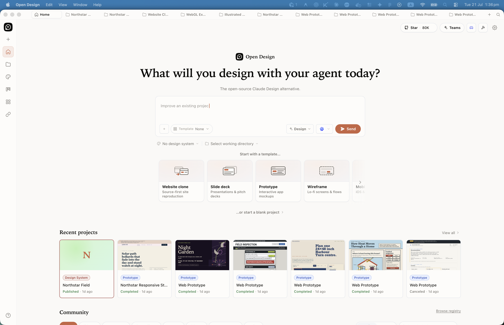
Inside Settings, three knowledge surfaces deserve explicit attention (see also Chapter 02 and Chapter 08):
- Instructions / Rules — fixed global rules for every chat.
- Memory — categorised saved facts (User / Project / Reference / Rule).
- Design Jury — optional five-panel scored review beside generation.

D.7a Settings catalogue — every rail item
The figures above cover the gear menu, Teams, and Design Jury. The catalogue below completes the Settings navigation rail as of v0.15.1 --- one figure per category so you can scan the full configuration surface without opening the app. Chapter 02 explains the knowledge layers; this subsection is the visual index.


One thing this panel deliberately omits: a log viewer. If a generation is completing without producing an artifact, or a model call is returning 401, the settings UI won't surface that. Run the daemon in foreground mode with pnpm tools-dev run daemon and read stderr. The settings panel handles the 80% case --- switching runtimes, adding an agent, rotating a key, adjusting the port. The remaining 20% of configuration and all diagnosis belongs in the terminal.
The Advanced section at the bottom of the settings panel exposes daemon flags that don't warrant a dedicated UI element: log verbosity, artifact storage path, and SSRF allowlist entries for local Ollama setups on non-standard addresses. The SSRF protection is a load-bearing security control --- don't disable it to work around a connection problem. If an Ollama endpoint is being blocked, add its address to the allowlist here rather than loosening the protection entirely. The rationale is in section 08.1.
The settings panel is deliberately thin, and that is the right call. Exposing every daemon flag in a GUI invites misconfiguration that's hard to debug because the person who set the flag doesn't remember setting it. The flags that matter day-to-day --- runtime, agent, key, port --- are here. Everything else is in the terminal where changes are visible in the shell history. I've configured Open Design on six machines; the settings panel handled four of them without any terminal work at all.
Next: This appendix is a visual reference, not a substitute for the chapters it illustrates. For the generate-to-export workflow in full, work through Chapter 03. For the brand-contract model behind design systems and presets, see Chapter 05. For plugins and automations from first principles, see Chapter 09. For the MCP server and HTTP API shown in the integrations page, see Chapter 10. For agent routing and the CLI comparison, see Chapter 11. For troubleshooting any screen shown here, turn to Appendix C.